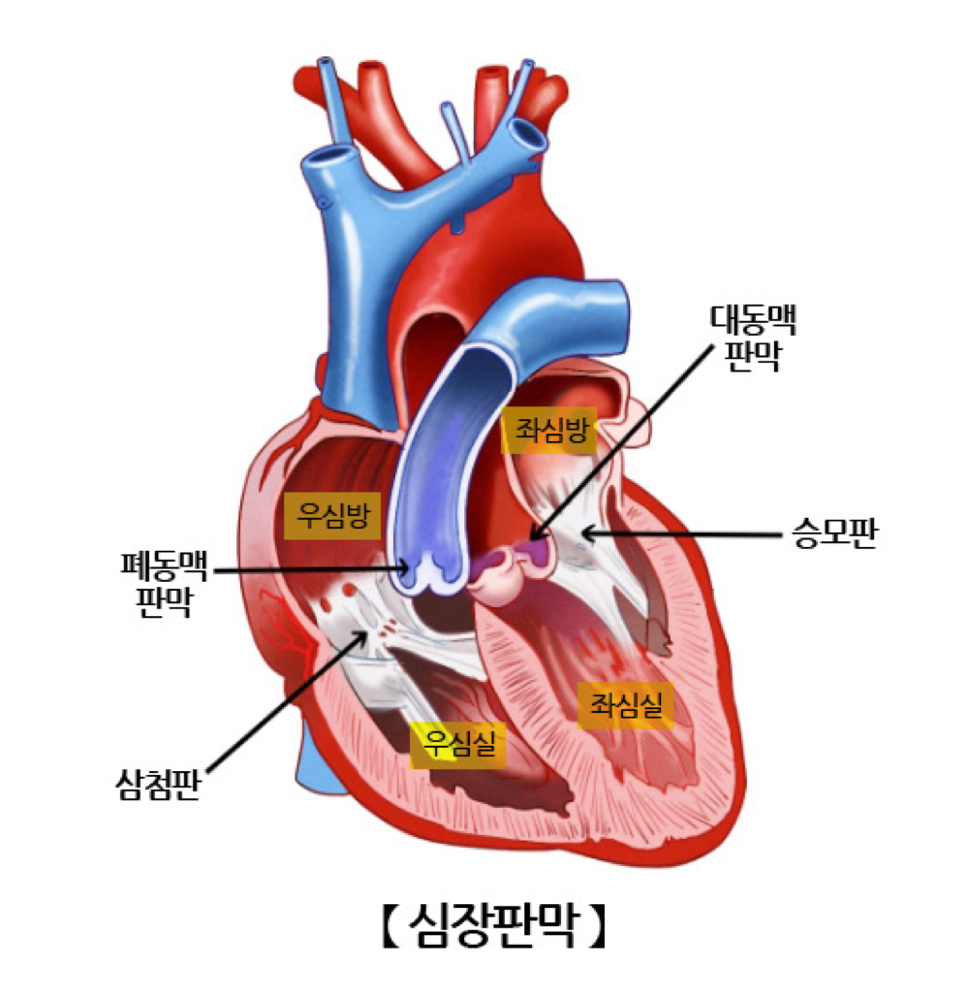
| 잡음 시기 | 부위 | 질환 | 특징 |
|---|---|---|---|
| 수축기 잡음 | 우측 제2늑간 | 대동맥판 협착증(AS) | 실신, 흉통, 우측 박출성 수축기 심잡음, 양측 경동맥 radiation |
| 심첨부 | 승모판 폐쇄부전증(MR) | 전 수축기 심잡음 | |
| 좌상흉골 | 폐동맥판 협착증(PS) | - | |
| 좌하흉골 | 삼첨판 폐쇄부전(TR) | - | |
| 확장기 잡음 | 우측 제2늑간 | 대동맥판 폐쇄부전증(AR) | - |
| 심첨부 | 승모판 협착증(MS) | - | |
| 좌상흉골 | 폐동맥판 폐쇄부전(PR) | - | |
| 좌하흉골 | 삼첨판 협착증(TS) | - |
● Valsalva maneuver 시: 대부분 잡음 감소 / 비후성 심근병증(HOCM), 승모판 탈출증(MVP)은 잡음 증가
-> HOCM 치료: BB, non-DHP CCB(verapamil, Diltiazem)
● 기립성 저혈압 치료
- 생활습관 조절 → 천천히 일어나기, 수분·염분 섭취 증가, 압박 스타킹 착용, 식후 저혈압 방지
- 약물 치료(증상 지속) → Fludrocortisone(혈액량 증가), Midodrine(혈관 수축), Droxidopa
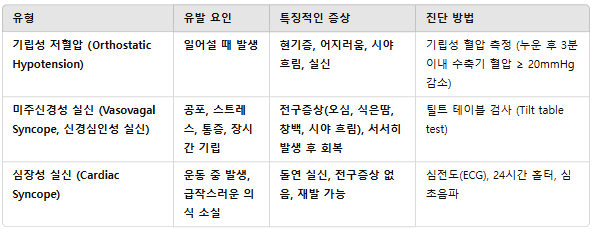
흉통 감별은 원인별 특징적 유발/완화 요인, 방사통 양상을 기준으로 접근함.
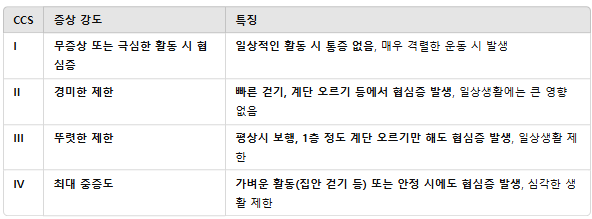
● 부종 유발 약제: CCB, NSAIDs, Thiazolidinediones, Corticosteroids, Estrogen 등 - 혈관 확장, 나트륨·수분 저류, 혈관 투과성 증가를 통해 부종 유발
-> CCB(Amlodipine), NSAIDs, TZD(Rosiglitazone) ...
| 부종 유형 | 특징 |
|---|---|
| 약물 유발 부종 | 약물 복용력 확인, 중단 후 호전 여부 확인 |
| 특발성 부종 | 여성, 체액 이동(아침 얼굴 → 저녁 다리), 월경 주기와 상관 없이 주기적 발생 |
| 월경전 부종 | 생리 전 증상 악화, 생리 시작 후 호전 |
| 림프부종 | 암 치료(림프절 절제, 방사선 치료) 후 발생, Stemmer sign(+), 림프스캔. 압박스타킹 사용 |
| 정맥부전 부종 | 장시간 서있을 때 심해지고, 정맥류 동반 가능, 도플러 초음파. 이뇨제 반응 X |
| 전신 부종(얼굴,손,발) | 고리이뇨제(Furosemide) 먼저 사용 |
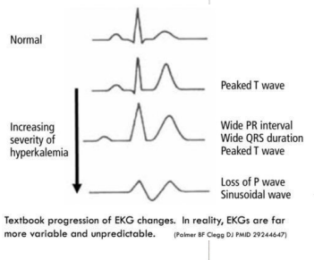
● Hyperkalemia: ACEi/ARB, BB, 과일 섭취(￥과일을 갈아서 먹었다)
- EKG: tall T wave, PR간격과 QRS 간격 연장
| 중증도 | 치료 |
|---|---|
| 경미한 고칼륨혈증(5.5~6.5 mEq/L) | 원인 교정 + 이뇨제/칼륨 제거제 |
| 중증 고칼륨혈증(≥6.5 mEq/L 또는 EKG 이상) | Ca²⁺(Calcium gluconate)(즉시 심장 보호) → 인슐린+포도당, β₂작용제(Albuterol)(K⁺ 세포내 이동) → 이뇨제, Kayexalate, 투석(K⁺ 제거) |
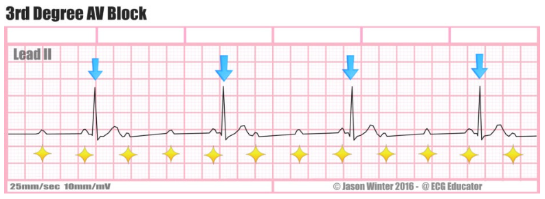
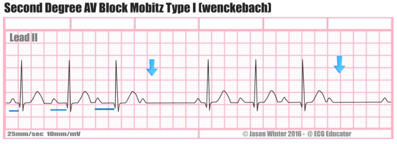
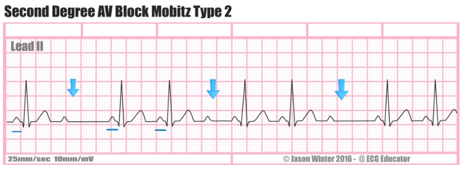
| 구분 | EKG 소견 | 치료 |
|---|---|---|
| 3도 방실차단(Complete AV block) | P파와 QRS파가 완전 해리(따로따로) | 약물 치료 불가 → 영구 인공 심박동기(PPM) 삽입 |
| 2도 Mobitz type I(Wenckebach) | PR간격이 점차 길어지다가 전도 차단되는 P파 나타남 | 증상 없으면 경과관찰, 불안정하면 atropine 투여 고려 |
| 2도 Mobitz type II | PR간격 일정 유지, 간헐적으로 전도되지 않는 P파 | 예후 나쁘므로 영구적 pacemaker 고려 |
| 1도 방실차단 | PR간격 > 0.2s(정상 0.12~0.2) | 보통 무증상, 예후 양호, 치료 불필요 |
● 심방조기박동(PAC) → 조기 P파 + 정상 QRS(좁고 정상 형태), 대부분 양성(경과관찰)
● 심실조기박동(VPC) → P파 없음 + 넓은 QRS(≥120ms, 비정상 형태), 필요시 평가
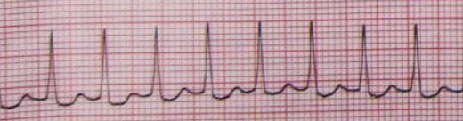
- Regular, narrow QRS
- 1차 치료: 발살바, 경동맥마사지 → Adenosine → (반응없으면) Verapamil
* 아데노신 불응성 PSVT: verapamil, β-blocker IV, Cardioversion
- 장기 치료(예방약): Verapamil, β-blocker(metoprolol) / 반복 재발시 Catheter ablation
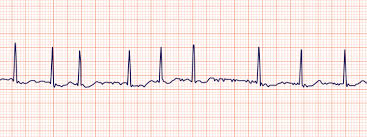
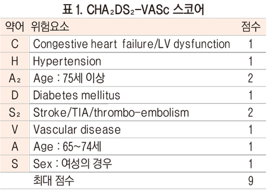
- Irregularly irregular
| 상태 | 치료 |
|---|---|
| 혈역학적 불안정 | Cardioversion |
| 혈역학적 안정 | CCB(verapamil, diltiazem) → 1차 rate control > β-blocker(propranolol, metoprolol) |
-> 심부전에서 Non-DHP CCB 금기: β-blocker, digoxin 사용
-> ￥천식, COPD, 말초혈관질환에서 β-blocker 금기: verapamil 사용
- 리듬 조절 필요시 → 전기적/약물적 심율동 전환(Flecainide, Amiodarone 등)
- 재발 예방 필요시 → Catheter Ablation or 항부정맥제 고려
- 심장판막치환술 기왕력 + 저혈압 + A.fib 환자, 와파린 복용중 → 바로 Cardioversion
- WPW 증상 없고 간헐적이면 경과관찰 가능(고위험군 아니면 치료 불필요)
- 빈맥 발생 시 전극도자절제술(RFCA) 1차 치료 고려
- WPW+AFib 발생 시 AV차단제(BB,CCB,Digoxin) 금기 → Class Ic 또는 III 항부정맥제 사용가능. 혈역학적 불안정 → cardioversion
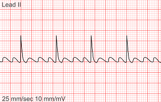
- 전형적인 톱날모양 P파, 2번or4번의 P파마다 한번씩 규칙적 QRS
- 치료: A.fib과 같음
- 전형적인 증상(호흡곤란, 부종)
- 기본검사(BNP ≥100 pg/mL, NT-proBNP ≥300 pg/mL)
- 심초음파에서 LVEF 평가하여 진단(HFrEF vs HFpEF 구분)
| 병태 | 치료 |
|---|---|
| 1) 폐울혈(수액과부하) | 이뇨제(Furosemide IV): Loop 이뇨제, 부족시 Thiazide 또는 Aldosterone antagonist 추가 혈관확장제(Nitroglycerin, Nitroprusside): 고혈압 동반/폐울혈 심한 경우, 혈압 유지시만 사용 가능 |
| 2) 저관류(심박출량 감소) | 이온트로픽 약제(Dobutamine, Milrinone): 저혈압 및 장기 저관류 증상(신기능저하,정신착란) 시 사용 Dobutamine: β-agonist→수축력↑ / Milrinone: PDE-III억제제→수축력↑+혈관확장 혈관수축제(Norepinephrine): 심한 저혈압(쇼크) 시 사용 |
1) HFrEF(EF≤40%)
* 1차 치료(모든 환자 권장) — ￥장기생존률 높이는 약
* 2차 치료(추가 고려)
2) HFpEF(EF≥50%)
명확한 생존율 개선 약제 없음 → 증상 조절 및 위험인자 관리 중심. 이뇨제(울혈 조절), MRA(Spironolactone, 특정군 입원율 감소), SGLT2억제제(증상·입원율 감소)
3) 비약물 치료
● Nitroglycerin → 정맥확장 주로(전부하감소), 심근경색·폐부종 유용
● Nitroprusside → 동맥+정맥확장(전·후부하감소), 고혈압성 위기·대동맥박리
| 심부전 악화약물 | 예시 |
|---|---|
| 수축력 저하 약물 | 항부정맥제, BB, 비-DHP CCB |
| 체액 저류 약물 | NSAIDs, 스테로이드, TZD(Pioglitazone) |
| 심근 독성 약물 | 항암제(Doxorubicin, Trastuzumab), 코카인, 알코올 |
- 원인: 50%에서 가족력(상염색체 우성) - sudden cardiac death
- 치료: 1차-BB(Atenolol), 2차-Verapamil(BB 불가시), 3차-Disopyramide
- sudden cardiac death 고위험군에서 ICD 삽입 고려
- 금기: Nitrate, ACEi/ARB, DHP-CCB(Amlodipine)
- 원인: idiopathic / inflammatory / toxic / metabolic / familial
- 가역적 확장성 심근병증: 알코올 심근병증, 분만 전후 심근병증
- 추가검사: Echo, BNP, EKG
- 치료: BB(Carvedilol 등), ARNI, ACEi/ARB, MRA(Spironolactone, Eplerenone), SGLT2억제제(Dapagliflozin 등) 추가 가능
- 심근경색 치료 후 흉통, 심근효소(CK-MB, Troponin) 정상, 심전도·CXR 정상
- 치료: NSAIDs(Aspirin, Ibuprofen) ± Colchicine, Beta-blocker(BB) 고려
- 원인: Coxsackievirus(특히 그룹 B), 기타 Enterovirus
- 전형적인 흉통: 흡기 및 기침 시 악화, 앉거나 기울이면 완화
- EKG 변화: Stage 1에서 ST elevation & PR depression
- 치료: 원인 질환 치료, NSAIDs(Aspirin, Ibuprofen) ± Colchicine
● 원인균: S.aureus(급성), S.viridans(아급성), S.epidermidis(인공판막 감염) - coagulase(-) staphylococci가 f/u, 대부분 MRSA
● 증상: 발열, 새로운 심잡음, 색전 증상(Osler's node, Janeway's lesion, Roth's spot, 손톱 반점)
| 구분 | 항목 |
|---|---|
| Major | 혈액배양 2회 이상, 심초음파(TTE(애매할때), TEE(IE 확실할때)) vegetation 확인 |
| Minor | 심장병력(기저 심질환, 인공판막 등), 발열(≥38°C), 혈관 증상(색전, 폐경색, Janeway 병변 등), 면역학적 증상(Osler결절, Roth반점 등), 불일치 혈액배양 결과 |
-> 확진(Definitive IE): Major 2개 또는 Major 1개+Minor 3개
-> 가능성(Probable IE): Major 1개+Minor 1~2개 또는 Minor 5개
- 치료: IV 항생제(4~6주) → 혈액배양 결과 기반 조정
- 수술 적응증: 심부전 진행, 치료에 반응하지 않는 감염, 거대한 Vegetation(>10mm, 색전위험 높음), 반복적 색전 발생(뇌졸중 등), 인공판막 감염
- 예방: 고위험군(인공판막 등)에서 치과 시술 전 예방적 항생제
Amoxicillin 2g PO(1시간 전 투여) / Penicillin allergy → Clindamycin(or clarithromycin, azithromycin, cephalexin)
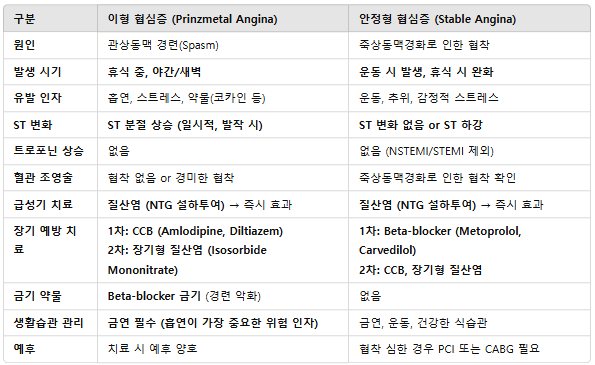
- 관상동맥 협착(≥70%) → 운동 시 허혈 발생
- 특징적 흉통: 운동, 감정적 스트레스 시 발생, 휴식 또는 NTG(니트로글리세린) 사용 시 호전
- 진단: 운동부하검사(운동가능할때), 관상동맥CT, 관상동맥조영술(CAG)
- 1차 치료(약물): 항혈소판제(Aspirin±Clopidogrel), 스타틴(Atorvastatin, Rosuvastatin), BB(Metoprolol, Carvedilol), CCB(Amlodipine, Diltiazem), 질산염(NTG)
- 2차 치료: PCI or CABG
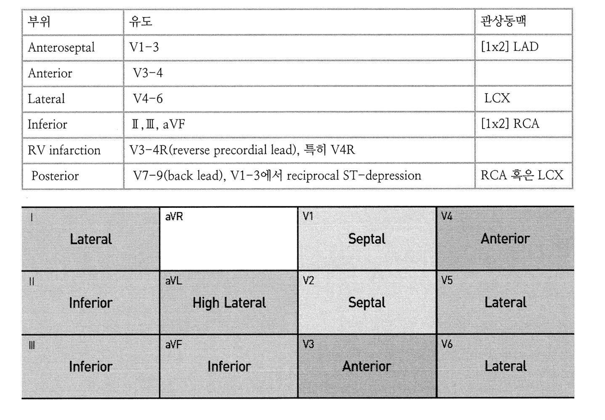
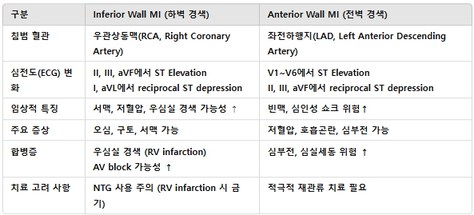
| 구분 | 특징 |
|---|---|
| 불안정형 협심증 | 진단은 주로 임상 양상에 의존. 죽상판 파열+혈전 형성→협착 심화, 휴식 중에도 흉통(30분 이상 지속가능). Troponin 정상, ECG: ST분절 변화없거나 비특이적 |
| NSTEMI | 불안정형과 유사하나 Troponin 상승. ECG: ST분절 비특이적 변화, T파 역전 가능, 심근손상 있음→입원 및 적극적 치료 필요 |
| STEMI | 관상동맥 완전 폐색→급성 심근괴사, 증상: 30분 이상 지속되는 심한 흉통, 식은땀, 호흡곤란. ECG: ￥tall T→ST elevation, 병적 Q파 발생 가능. 치료: MONAB+R(BB: 급성기X, 나중에 혈압조절) |
⇒ 공통 검사: EKG, Troponin, CT, CAG
⇒ 공통 치료(UA,NSTEMI,STEMI 공통): Morphine(통증조절), Oxygen(산소공급), Nitroglycerin(혈관확장,증상완화), Aspirin+Clopidogrel(항혈소판제)
● 협심증 진단 후 isosorbide nitrate 복용후 두통 발생 → 감량 → 정량이면 NSAIDs
● CABG Hx(+) → 허혈증상 시 심장관상동맥중재술
| 표지자 | 특징 |
|---|---|
| Troponin(cTnI,cTnT) | MI 진단의 1차 선택검사(심근특이성 가장 높음), 심근경색 외 심부전·패혈증·신부전에서도 상승가능 |
| ￥CK-MB | 재경색 감별에 유용(짧은 반감기), 근육손상에서도 상승가능→특이도 낮음 |
| Myoglobin | 가장 빨리 상승, 소변으로 배설되어 가장 빨리 정상화. cardiac specificity 부족 |
- 활동시 증상없고 휴식 시에만 발생하는 심한 흉통
- 통증 발생 시 ST분절의 일시적 상승
- 안정시, 한밤중/새벽/이른아침 흉통(특히 술 마신 다음날 새벽)
- 치료: Nitrates + CCBs(amlodipine)
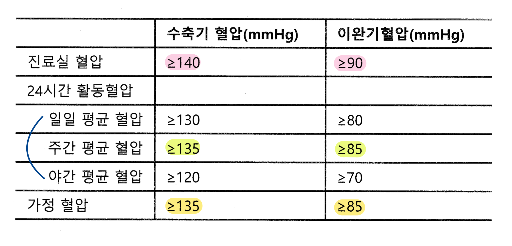
| 질환 | 증상 | 선별/확진검사 |
|---|---|---|
| 일차성 알도스테론증 | Hypo K+고혈압, 전신쇠약감, 근무력감, 감각이상, 야뇨 | 선별: Aldosterone-renin ratio(ARR)(aldo↑+Renin억제) 확진: 생리식염수 부하검사(IV saline loading test), Fludrocortisone suppression test, oral sodium loading test |
| 쿠싱증후군 | 체중 증가, 정서 불안 | 선별: 24시간 소변 코르티솔, 덱사메타손 억제검사(low-dose) 원인감별: ACTH검사, CT, MRI |
| 크롬친화세포종 | 두통, 발한, 빈맥, 기립성 저혈압, 운동시 호흡곤란 | 24시간 소변 내 메타네프린 및 노르-메타네프린(24시간 요 catecholamine) |
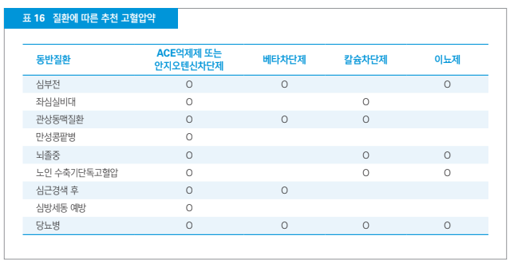
| 약제 | 기전/특징 |
|---|---|
| ACEi/ARB | 혈관확장 및 레닌-안지오텐신 억제. ARB: 요산배설↑, 인슐린저항성 개선, 대사증후군에 효과적. 신장보호효과 있어 DM신증·CKD환자 1차선택(Hyper K 주의) / 양측 신동맥협착 금기 |
| CCB | 혈관확장 및 말초저항 감소. 하부식도괄약근 압력 감소시켜 GERD 악화가능. CKD환자에서 DHP계열(Amlodipine, Felodipine) 안전. DHP→혈관선택성(고혈압약), non-DHP(Verapamil)→심장선택성(부정맥). DHP 부작용: 빈맥, 하지부종, 두통, 안면홍조 |
| β-blocker | 심박수 감소 및 심장부담 감소. 식도압력 변화로 GERD 악화가능. 인슐린저항성 증가가능→대사증후군에서 비선호 |
| Diuretics(thiazide, spironolactone) | 체액감소로 혈압강하. Thiazide 부작용: 고요산혈증(통풍)악화가능, hypo Na, hypo K, hyper Ca, 고혈당, 고지혈증. Spironolactone 부작용: hyper K(ACEi/ARB 병용x), 여유증, 성욕감소, 발기부전 |
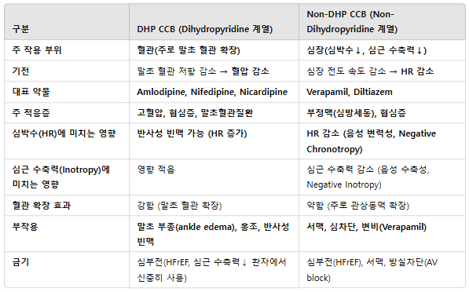
| 임상 상황 | 대응 |
|---|---|
| 4제(ARB,CCB,BB,thiazide)로 조절안되는 저항성 고혈압 | spironolactone 추가 |
| 3제(ARB,CCB,BB)로 조절안되는 저항성 고혈압 | Thiazide or Thiazide-like(indapamide) 추가 |
| CCB+ARB 2제 조절 안됨 | 용량 증량 → thiazide 추가 → BB 추가 |
| 통풍, 요산↑ | thiazide를 ARB(losartan)로 교체 |
| GERD, 요산↑ | ARB(-sartan), CCB·BB는 GERD 악화시킴 |
| DM nephropathy, 단백뇨 | ACEi or ARB + CCB |
| 관상동맥질환, PCI | BB(atenolol) 우선, ACEi 가능 |
| AV block(서맥) | ACEi(ramipril), BB, CCB 금기 |
| 임신 중 사용가능 | α2-agonist(methyldopa), CCB(Nifedipine), BB(Labetalol) |
| 부작용/증상 | 원인 약제 |
|---|---|
| 여유증 | Spironolactone(MRA) → 에스트로겐 유사 작용 |
| 하지부종 | CCB(amlodipine) |
| 이상미각(입 따끔, 맛 안느껴짐) | ARB(Telmisartan), ACEi → hyper K 때문 |
| ACEi와 병용 주의 | spironolactone → hyper K 위험 증가 |
● DVT 치료: LMWH(heparin)→Warfarin 전환 / DOAC(Apixaban) 단독 / Heparin→DOAC 전환
● 폐색전증 의심 시 가장 빠르고 정확한 진단법: Chest CT with contrast
● 골절 후 폐색전증 증상: r/o 지방색전증 (PE와 감별점: 구강점막, 전흉부 액와부 점상출혈)
● 대동맥류 가장 흔한 원인: 죽상경화증
● 대동맥박리: 갑작스러운 방사되는 흉통, X-ray 종격동 확장
- 치료: Nitroprusside + BB(propranolol, esmolol, metoprolol) or Labetalol(BB&α-blocker 성질 가지므로 단독 사용 가능)
● 말초동맥질환(PAD) 치료의 핵심: 항혈소판제(aspirin or clopidogrel) 사용
● PAD 간헐적 파행 증상 완화 목적: Cilostazol(혈관확장제)
● 맥박 약함/촉지 안됨 → r/o PAD(ASO) → 도플러 초음파 검사
● 17세부터 흡연한 35세 환자, 다리 통증, arteriography: 버거병(Buerger's disease) / 치료: 금연
● 레이노 현상 치료: Nifedipine SR
● 레이노 현상 유발 약물: BB, Ergotamine, Triptan 등